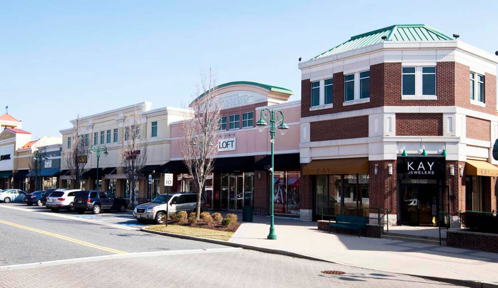
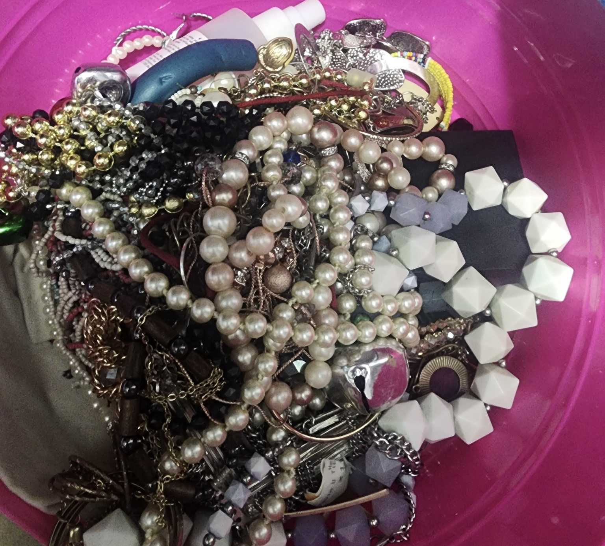

The Kay Jewelers store at Bowie Town Center was hit in a high-profile heist. (Source: Washington Prime Group)
BOWIE – The Kay Jewelers store at Bowie Town Center, located on Emerald Way, was a target in a high-profile theft on May 26, 2024.
This jewelry store seems to be a target for thieves, as in February of 2020, the same store was hit and robbed of $27,000 worth of jewelry, according to Patch.com
This crime, which remains currently unsolved, has drawn attention from law enforcement and the local community, particularly amid rising concerns about organized retail crime in Maryland.
The theft is one of many reported in May 2024, a month filled with shoplifting, vehicle-related thefts, and "jugging."
A box full of various kinds of jewelry (Savannah Grooms)

A Pattern of Theft in Bowie
The theft at Kay Jewelers is part of a trend. In May of 2024 alone, there were 40 shoplifting incidents in Bowie with 18 occurring within the vicinity of Bowie Town Center, along with numerous vehicle part thefts.
The rate has not improved much since, with 39 shoplifting incidents reported in October of this year. In addition to shoplifting, there were 65 motor-related thefts, highlighting the ongoing concerns about vehicle security in the area. Property crime also remains a significant issue, with 47 incidents of damage or destruction to property reported during the same period.
The frequency of these crimes has sparked speculation about the involvement of organized groups rather than isolated individuals.
In addition, the Bowie Police Department is grappling with an increase in “jugging” crimes, where robbers target bank customers withdrawing cash from ATMs or leaving with money. Bowie Police Chief Dwayne Preston stated that the city has seen a spike in these cases, according to NBC in July.
These incidents often involve stolen vehicles and have occurred at multiple banks across Prince George’s and Anne Arundel counties.
The Impact on the Community
Retail theft and jugging crimes are impacting the community. As these crimes increase, so do costs for local retailers and the risk of violence for residents targeted in jugging incidents. This has left many Bowie Town Center shoppers feeling uneasy, with some avoiding high-traffic areas during peak hours.
Efforts to Solve the Case
The Bowie Police Department is working to solve the Kay Jewelers case, using their Facebook page to spread awareness and urging anyone with information to come forward.
Chief Preston has emphasized the importance of community vigilance and has urged residents to remain cautious.
“We are actively working with local law enforcement agencies to share information that will aid efforts to end this crime spree,” he said in a July 2024 press release.
“Help keep everyone safe by reporting suspicious people or vehicles you might notice throughout the community”
Preston noted that while the police department is working effectively, residents must too.
“The Bowie Police Department is unwavering in our commitment to your safety. We are working tirelessly to protect you from these criminal activities,” he said.
“Stay safe, and know that we are here for you.”
Residents with information on the Kay Jewelers theft or jugging incidents are encouraged to contact the Bowie Police Department at 240-544-5700.